Psychoterapia indywidualna
Regularna praca nad emocjami, relacjami i trudnościami, w bezpiecznej i poufnej relacji z terapeutą.
Dowiedz się więcej →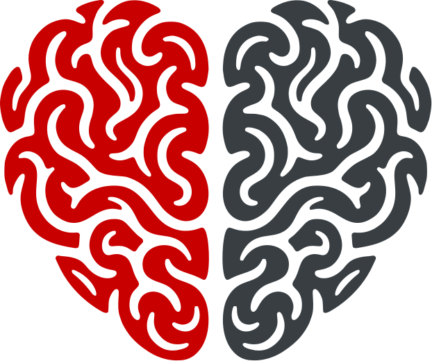
Pro-Mentis Klinika PsychoterapiiMiejsce, w którym emocje i myśli spotykają się w bezpiecznej rozmowie. Profesjonalna psychoterapia prowadzona z uważnością, dyskrecją i szacunkiem.
Dobieramy podejście do potrzeb — od pojedynczej konsultacji po regularny proces terapeutyczny.
Regularna praca nad emocjami, relacjami i trudnościami, w bezpiecznej i poufnej relacji z terapeutą.
Dowiedz się więcej →Wsparcie w odbudowie porozumienia, zaufania i bliskości — dla par na każdym etapie związku.
Dowiedz się więcej →Praca z całym systemem rodzinnym, gdy trudności dotykają relacji między bliskimi osobami.
Dowiedz się więcej →Bezpieczna przestrzeń dla dzieci i nastolatków oraz wsparcie dla rodziców w towarzyszeniu w rozwoju.
Dowiedz się więcej →Konsultacje psychologiczne, interwencja kryzysowa i poradnictwo wychowawcze — pomoc w nagłych, trudnych sytuacjach.
Dowiedz się więcej →Rzetelna ocena funkcjonowania psychicznego z wykorzystaniem testów i wywiadu — z pisemną opinią i zaleceniami.
Dowiedz się więcej →Wsparcie w trudnościach dotyczących seksualności i bliskości — w atmosferze dyskrecji i bez oceniania.
Dowiedz się więcej →Konsultacje i diagnoza w obszarze zdrowia psychicznego prowadzone przez psychologa klinicznego.
Dowiedz się więcej →Wsparcie żywieniowe prowadzone przez dietetyka klinicznego — plan dopasowany do zdrowia, leczenia i codziennych nawyków.
Dowiedz się więcej →Bezstronne wsparcie w wypracowaniu porozumienia — opieka nad dziećmi, konflikty małżeńskie, alimenty i ustalenia porozstaniowe.
Dowiedz się więcej →Zajęcia grupowe rozwijające komunikację, współpracę i swobodę w relacjach z innymi ludźmi.
Dowiedz się więcej →Regularne spotkania w małej grupie — wspólne doświadczenie, które daje ulgę i poczucie, że nie jesteś sam.
Dowiedz się więcej →Zajęcia dla małych grup — rzetelna wiedza o seksualności, relacjach i granicach, prowadzone przez seksuologa.
Dowiedz się więcej →Bez ukrytych kosztów. Przy każdej usłudze podajemy czas trwania oraz dostępne sposoby zapisu.
Umawianie online — przez ZnanyLekarz i własny kalendarz na pro-mentis.pl — uruchamiamy wkrótce. Do tego czasu zapisy przez formularz lub telefonicznie.
Prowadzona przez psycholożkę w trakcie specjalizacji z psychologii klinicznej. Zapisy przez formularz.
Płatność: BLIK, gotówka lub karta. Do każdej wizyty wydajemy paragon; faktura na życzenie.
Doświadczeni psychoterapeuci, psycholodzy i lekarze, pracujący w nurcie opartym na relacji i zrozumieniu.
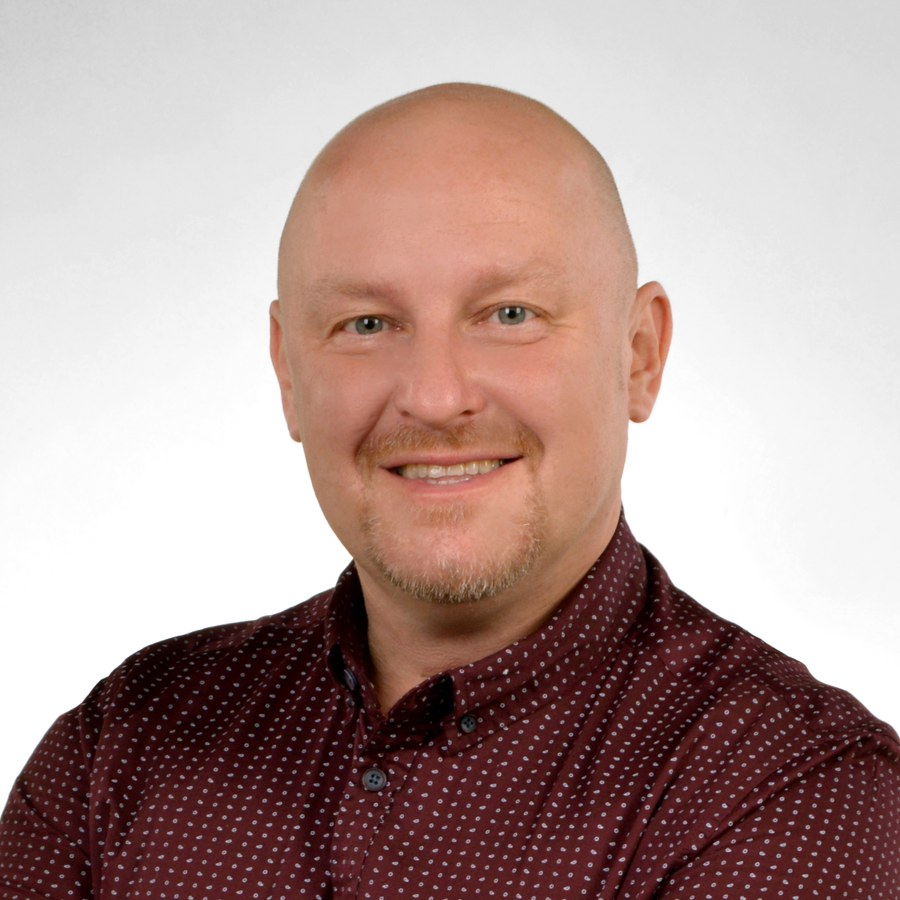
Jestem psychoterapeutą, psychologiem i seksuologiem, dla którego w pracy najważniejszy jest człowiek. Wierzę, że relacja terapeutyczna to przestrzeń, w której serce i rozum odnajdują wspólne porozumienie. Do każdego pacjenta podchodzę w sposób unikalny i indywidualny, patrząc na jego funkcjonowanie całościowo.
W procesie terapeutycznym wspólnie z pacjentem pracuję nad odnalezieniem i przepracowaniem nieuświadomionych konfliktów, które wywołują dysfunkcje w codziennym życiu. Zależy mi na tym, aby psychoterapia była procesem leczącym i usamodzielniającym, a nie uzależniającym.
Główną bazą mojej pracy jest nurt psychodynamiczny. W codziennej praktyce płynnie integruję narzędzia terapii poznawczo-behawioralnej (CBT), humanistycznej, systemowej oraz Terapii Skoncentrowanej na Rozwiązaniach (TSR), dopasowując je do potrzeb pacjenta. Posiadam blisko 16-letnie doświadczenie jako coach i trener umiejętności psychospołecznych, a przez 17 lat wspierałem pacjentów zmagających się z cukrzycą oraz ich bliskich.
Moja praca podlega stałej, regularnej superwizji u certyfikowanych superwizorów Polskiego Towarzystwa Psychiatrycznego, co gwarantuje pełne bezpieczeństwo i najwyższy standard etyki zawodowej.
Jestem psycholożką i diagnostką psychologiczną. Głęboko wierzę, że każda osoba szukająca wsparcia zasługuje na absolutną uważność, pełne zrozumienie oraz bezwarunkowe poczucie bezpieczeństwa. W swojej codziennej praktyce tworzę bezpieczną przestrzeń opartą na szacunku, akceptacji oraz głęboko indywidualnym podejściu.
Szczególną wagę przywiązuję do rzetelnej, profesjonalnej diagnozy, ponieważ stanowi ona fundament do skutecznego planowania dalszej pomocy. Dbam o to, aby pacjent otrzymał jasne wyjaśnienie wyników oraz konkretne drogowskazy do dalszego działania.
Terminy ustalane indywidualnie — prosimy o kontakt z rejestracją.
Towarzyszę osobom dorosłym w przechodzeniu przez kryzysy życiowe, radzeniu sobie z trudnościami emocjonalnymi i wyzwaniami zdrowia psychicznego. Na co dzień łączę pracę gabinetową z praktyką szpitalną. Moje doświadczenie obejmuje pracę na oddziałach psychiatrycznych, w ośrodkach leczenia uzależnień, środowiskowych domach samopomocy oraz w ramach licznych staży klinicznych. Dzięki temu doskonale znam specyfikę pracy z osobami doświadczającymi zaburzeń nastroju, lękowych, osobowości, a także z pacjentami zmagającymi się z trudnościami poznawczymi czy neurorozwojowymi.
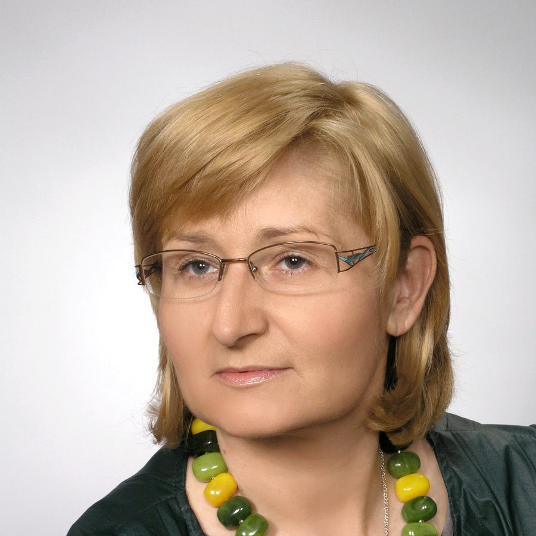
Jestem psycholożką, doktorem nauk humanistycznych oraz wykładowczynią akademicką. W obszarze moich zainteresowań zawodowych i naukowych od zawsze znajduje się rodzina — dzieci, młodzież oraz osoby dorosłe — a także ich funkcjonowanie psychospołeczne. W codziennej pracy łączę wieloletnią wiedzę akademicką z bogatym, praktycznym doświadczeniem klinicznym.
Praca z drugą osobą to dla mnie przede wszystkim szacunek do jej unikalnej historii. Szczególnie bliska jest mi specyfika postrzegania świata przez osoby w spektrum czy niepełnosprawne, których autentyczność i emocjonalność wyznaczają najwyższy standard budowania szczerej relacji terapeutycznej.
Swoje doświadczenie budowałam m.in. w Poradni Psychologiczno-Pedagogicznej, pracując nad diagnostyką, modyfikacją relacji rodzinnych oraz korekcją trudności wychowawczych. Współpracując z fundacją „Równe Szanse”, pomagałam osobom uzależnionym oraz zagrożonym wykluczeniem społecznym. Jako biegła w Opiniodawczym Zespole Sądowych Specjalistów wspierałam rodziny w kryzysie rozpadu relacji oraz dzieci doświadczające traumy rozwodu rodziców. Bliskie są mi również wyzwania młodzieży związane z konsekwencjami izolacji społecznej, a także tematyka niepełnosprawności i zaburzeń rozwojowych.
Jestem psycholożką, psychoonkolożką, psychotraumatolożką oraz socjolożką zdrowia. Relację z pacjentem traktuję jako szczególny rodzaj więzi — pełnej autentyczności, szacunku i wzajemnego, życzliwego nastawienia. Mam głębokie poczucie, że pacjent powierza mi to, co najważniejsze: swój wewnętrzny świat, swoje troski, lęki, ale i nadzieje.
Szczególne miejsce w mojej pracy zajmują osoby zmagające się z traumą onkologiczną oraz ich bliscy. Połączenie wiedzy specjalistycznej, doświadczenia zawodowego i osobistego pozwala mi głęboko rozumieć emocje, myśli oraz doznania fizyczne, z którymi mierzy się osoba w trakcie choroby nowotworowej.
W praktyce terapeutycznej łączę podejście skoncentrowane na sensie i wartościach (logoterapia V. E. Frankla) z wysoce skutecznymi metodami poznawczo-behawioralnymi oraz dostosowanymi do pracy z traumą. Wykorzystuję m.in. Racjonalną Terapię Zachowania (RTZ), Terapię Akceptacji i Zaangażowania (ACT), Terapię Simontonowską, Terapię Dialektyczno-Behawioralną (DBT), terapię narracyjną oraz Terapię Skoncentrowaną na Rozwiązaniach (TSR). Wspieram również klientów jako mentor zmiany zawodowej, coach w chorobie oraz trener umiejętności antystresowych i samooceny.
Moja praca podlega comiesięcznej, regularnej superwizji, co gwarantuje zachowanie najwyższych standardów etycznych i terapeutycznych.
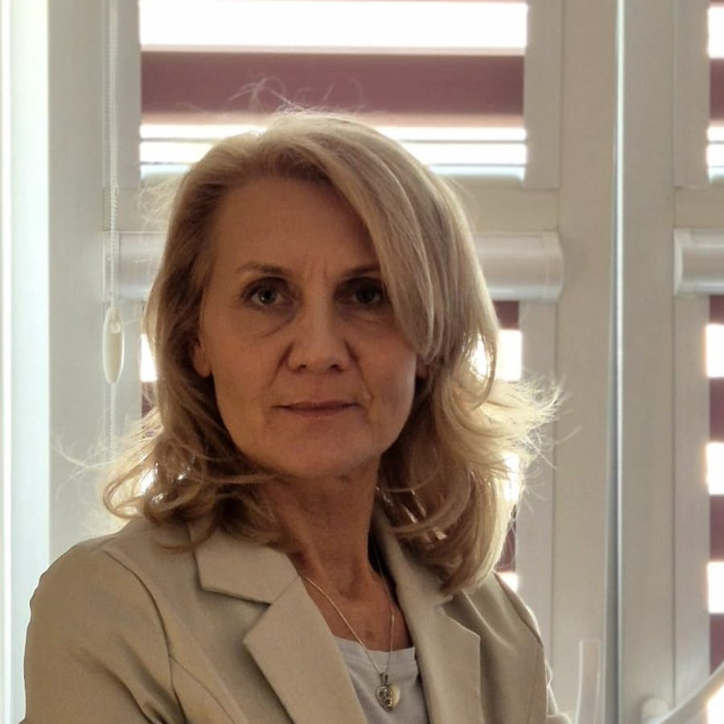
Od ponad dwudziestu lat zawodowo wspieram osoby znajdujące się w trudnych i kryzysowych sytuacjach życiowych. Za główny cel mojej pracy stawiam sobie głębokie zrozumienie drugiego człowieka oraz towarzyszenie mu w drodze do wewnętrznej zmiany. Pomagam w przezwyciężaniu trudności emocjonalnych, budowaniu lepszego rozumienia siebie i innych oraz odzyskiwaniu równowagi psychicznej.
Psychoterapia psychodynamiczna to proces leczenia oparty na autentycznej relacji i dialogu. Podczas sesji stwarzam bezpieczną przestrzeń, w której pacjent może swobodnie dzielić się swoimi myślami, skojarzeniami i emocjami. Kluczowym czynnikiem niosącym trwałą zmianę jest wgląd — czyli pełniejsze, głębsze rozumienie samego siebie.
W pracy terapeutycznej dostosowuję swoją aktywność i stosowane metody do indywidualnych możliwości oraz unikalnych potrzeb każdego pacjenta. Prowadzę psychoterapię indywidualną młodzieży i osób dorosłych w nurcie psychodynamicznym, a także pracuję z rodzinami.
W trosce o najwyższą jakość świadczonej pomocy oraz bezpieczeństwo moich pacjentów, moja praca podlega stałej, regularnej superwizji.
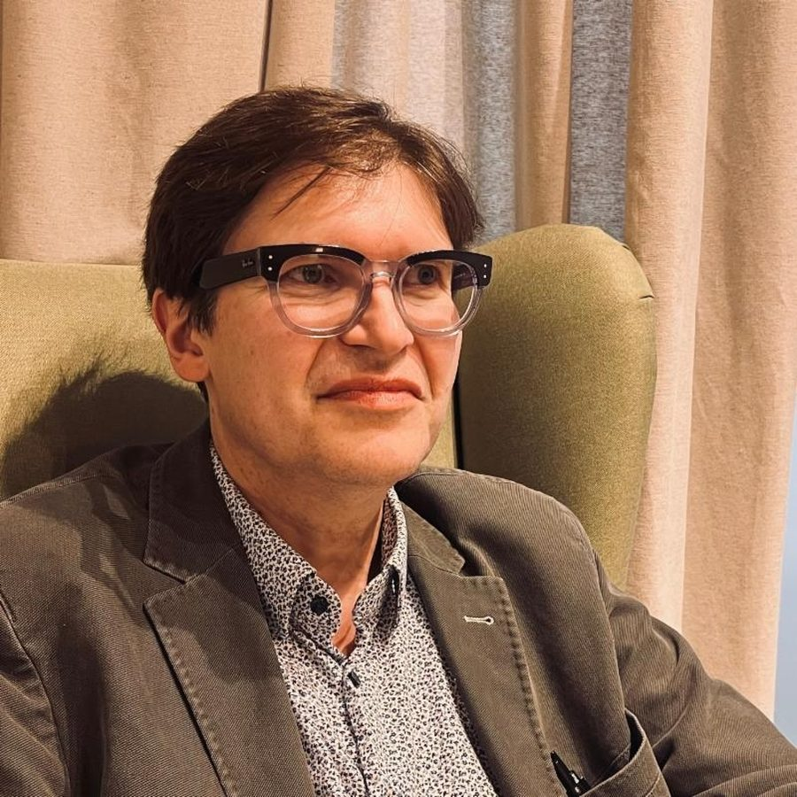
Jestem psychoterapeutą pracującym w nurcie psychodynamicznym oraz doktorem nauk medycznych. W pracy z drugim człowiekiem łączę solidne fundamenty naukowe z głębokim zrozumieniem procesów psychicznych. Swoim pacjentom pomagam odkryć i zrozumieć, w jaki sposób ich nieświadome myśli, uczucia i utrwalone wzorce zachowań wpływają na codzienne życie, relacje oraz ogólne samopoczucie.
Moja praktyka opiera się na rzetelnych podstawach teoretycznych oraz sprawdzonych metodach terapeutycznych, nastawionych na pracę długoterminową. W bezpiecznej przestrzeni gabinetu wspólnie identyfikujemy i przekształcamy negatywne schematy, które leżą u podłoża życiowych trudności i cierpienia.
Swoją ofertę kieruję do osób, które zmagają się z niestabilnością emocjonalną, poczuciem pustki, nawracającym lękiem, smutkiem czy impulsywnością. Pomagam pacjentom doświadczającym trudności w budowaniu trwałych, satysfakcjonujących relacji oraz osobom mierzącym się z pytaniami o własną tożsamość.
Moja praca podlega stałej superwizji u certyfikowanego superwizora Polskiego Towarzystwa Psychiatrycznego (PTP), co zapewnia pacjentom pełne bezpieczeństwo oraz wysoki standard etyki zawodowej.
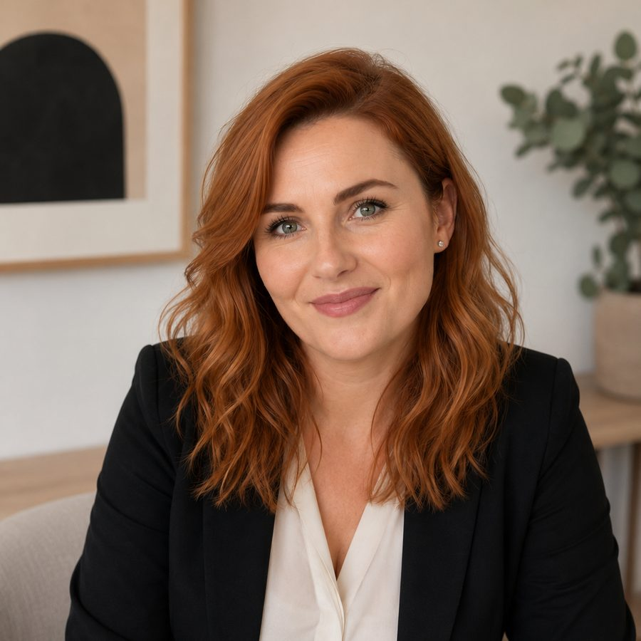
Seksualność jest jedną z najbardziej naturalnych sfer naszego życia, a jednocześnie jedną z tych, o których najtrudniej rozmawiać. W swojej pracy pomagam oswoić tematy związane z intymnością, relacjami i zdrowiem seksualnym, tworząc bezpieczną przestrzeń opartą na zaufaniu, szacunku oraz bezwarunkowej akceptacji.
Swoją praktykę opieram na aktualnej wiedzy naukowej, empatii oraz indywidualnym podejściu do każdego człowieka. Szczególnie bliska jest mi praca z osobami z niepełnosprawnościami oraz ich bliskimi — od lat działam na rzecz dostępności edukacji i zdrowia seksualnego bez względu na poziom sprawności.
Terminy ustalane indywidualnie — prosimy o kontakt z rejestracją.
Wierzę, że każda osoba zasługuje na możliwość przeżywania swojej seksualności w sposób świadomy, bezpieczny i satysfakcjonujący. Jestem założycielką portalu Seksperci.pl oraz cenioną ekspertką wspierającą popularyzację rzetelnej wiedzy o seksualności w mediach (m.in. Newsweek, Forbes Women). W 2024 roku zostałam wyróżniona na Liście 100 osób wspierających edukację seksualną w Polsce (SEXEDPL i Forbes Women). Jako mediatorka sądowa wspieram również rodziny i bliskich w przechodzeniu przez sytuacje konfliktowe i wypracowywaniu porozumienia z poszanowaniem potrzeb obu stron.
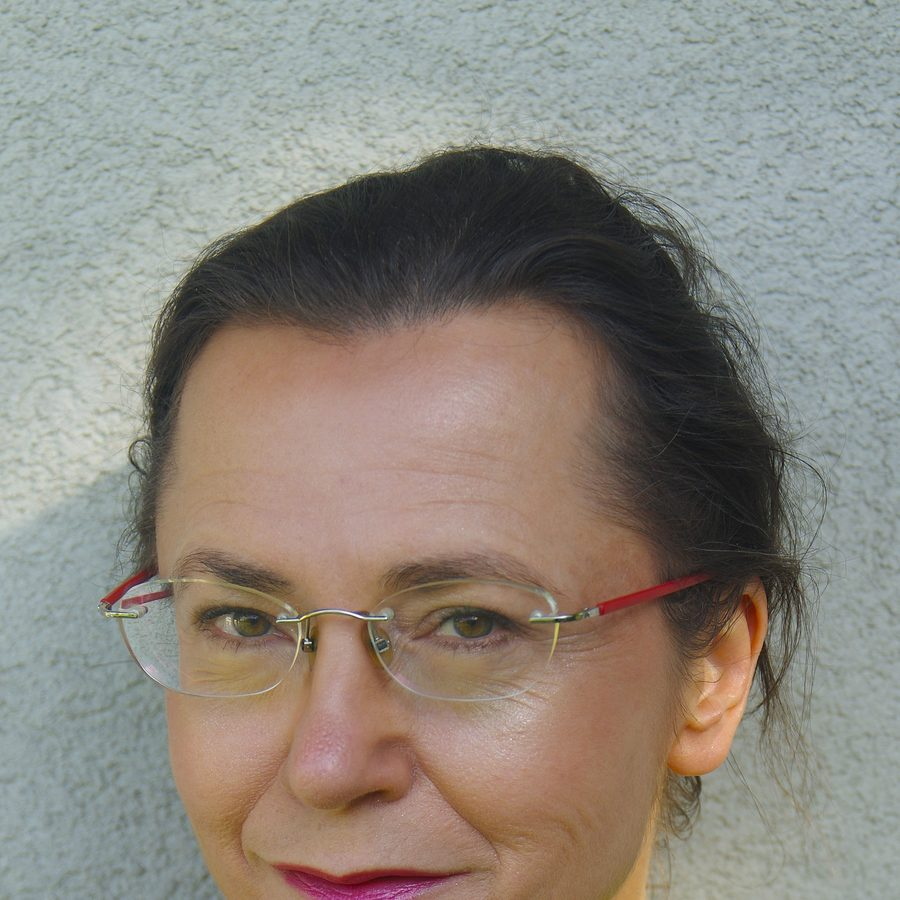
Jestem lekarką, doktorem nauk medycznych oraz psychoterapeutką pracującą w nurcie psychodynamicznym. W swojej praktyce terapeutycznej łączę wiedzę medyczną z rzetelnymi podstawami teoretycznymi psychoterapii, stosując sprawdzone i bezpieczne metody wsparcia psychologicznego.
Terapia psychodynamiczna z założenia jest oddziaływaniem długoterminowym. Rozwiązanie problemów, które narastały i kształtowały się w nas przez lata, wymaga czasu, cierpliwości oraz ciągłości. Z tego powodu moja praca opiera się na stabilnym settingu psychodynamicznym, nastawionym na głęboką, długofalową zmianę.
Swoją ofertę kieruję do osób poszukujących profesjonalnej i długoterminowej pomocy terapeutycznej w zrozumieniu własnych emocji, zachowań oraz źródeł doświadczanych trudności psychicznych.
Moja praca psychoterapeutyczna podlega stałej, regularnej superwizji, co zapewnia najwyższy poziom bezpieczeństwa, etyki i profesjonalizmu świadczonej pomocy.
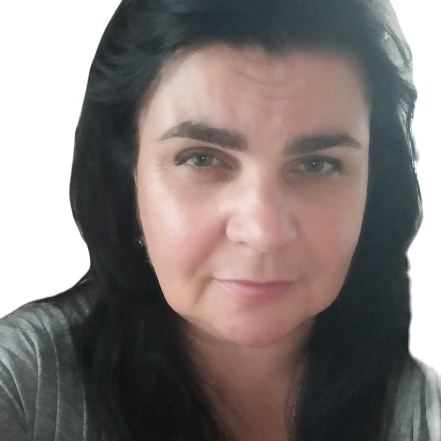
W pracy z pacjentami najwyżej cenię sobie autentyczną relację terapeutyczną oraz dobrą, zaangażowaną współpracę. Tworzę bezpieczną przestrzeń opartą na wzajemnym szacunku, zaufaniu oraz empatycznym zrozumieniu. Wierzę, że wspólnie wyznaczone cele oraz partnerstwo w procesie leczenia stanowią fundament do pokonania życiowych trudności i odzyskania równowagi.
Każdy kryzys jest sygnałem do zatrzymania się i przyjrzenia własnym potrzebom. Pomagam pacjentom przejść przez najtrudniejsze momenty emocjonalne, stawiając na rzetelną współpracę i indywidualnie dobrane wsparcie.
Swoją ofertę kieruję do osób dorosłych oraz rodziców zmagających się z wyzwaniami emocjonalnymi, relacyjnymi czy wychowawczymi. Stale poszerzam swoje kompetencje i aktualizuję wiedzę, uczestnicząc w specjalistycznych warsztatach i szkoleniach.
Moja praca podlega stałej, regularnej superwizji u certyfikowanych superwizorów Sekcji Naukowej Psychoterapii Polskiego Towarzystwa Psychiatrycznego, co gwarantuje zachowanie najwyższych standardów etycznych i terapeutycznych.
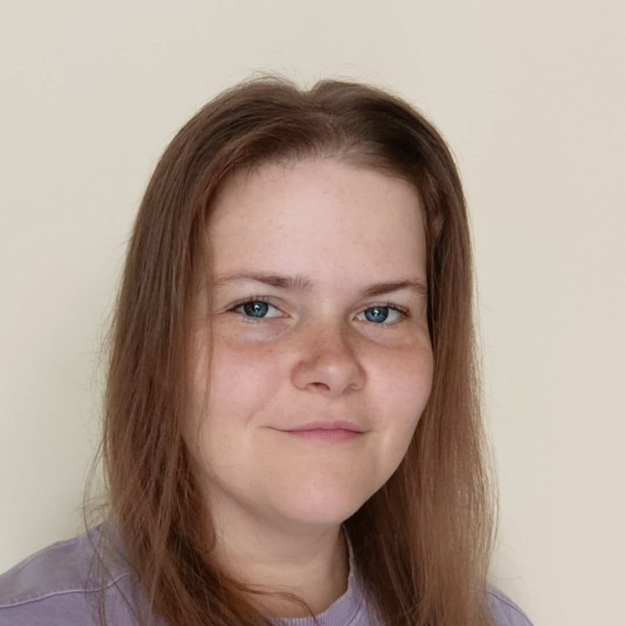
Jestem psycholożką, absolwentką studiów psychologicznych na Uniwersytecie Łódzkim. W pracy z drugim człowiekiem szczególnie cenię budowanie autentycznej relacji opartej na zaufaniu, życzliwości i bezwarunkowym poczuciu bezpieczeństwa. Staram się tworzyć spokojną, empatyczną przestrzeń, w której pacjent może swobodnie i bez oceniania otwierać się na rozmowę o swoich trudnościach.
Praca z pacjentami pokazała mi, jak ogromną wartość mają uważność oraz indywidualne podejście do historii każdego człowieka. W procesie wsparcia dbam o to, by każda osoba poczuła się usłyszana i zrozumiana.
Obecnie podnoszę swoje kwalifikacje, uczestnicząc w całościowym, 4-letnim szkoleniu psychoterapeutycznym w nurcie poznawczo-behawioralnym (CBT). Swoją wiedzę stale poszerzam poprzez regularny udział w specjalistycznych kursach, szkoleniach i konferencjach branżowych.
Łączymy serce i rozum — bo zdrowie psychiczne rodzi się tam, gdzie emocje i myśli się spotykają.
Tworzymy przestrzeń wolną od oceny, w której można mówić o wszystkim w pełnej dyskrecji.
Pracujemy w oparciu o sprawdzone metody i stałą superwizję naszej pracy.
Wierzymy, że to dobra relacja terapeutyczna jest fundamentem skutecznej zmiany.
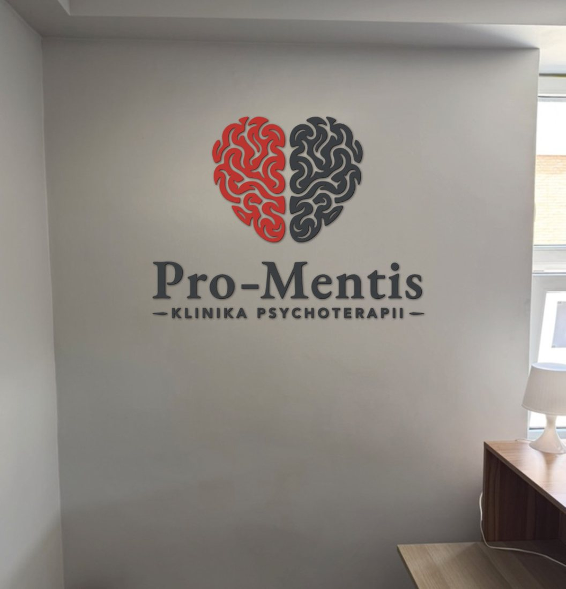
Dobrze skomunikowane miejsce z łatwym dojazdem komunikacją miejską i samochodem.
ul. Drewnowska 102
Łódź — obok Manufaktury
Przystanek tramwajowy i autobusowy w odległości 3 minut spaceru.
Parking bezpośrednio pod budynkiem lub na parkingu Manufaktury (od strony Leroy Merlin).
Pon.–Pt. 8:00–21:00 · Sob. 9:00–15:00
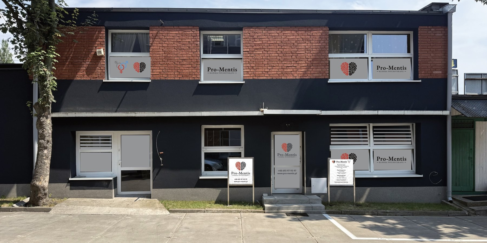
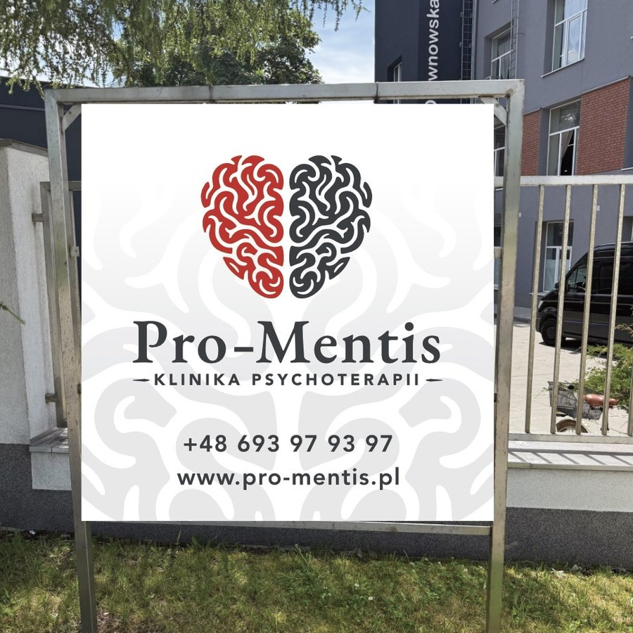
Zadzwoń, napisz lub wypełnij formularz — pomożemy dobrać odpowiedniego specjalistę.
Grafik może się zmieniać — aktualną dostępność potwierdzamy przy zapisie.
| Specjalista | Pon. | Wt. | Śr. | Czw. | Pt. | Sob. |
|---|---|---|---|---|---|---|
| Dariusz Drużyński | — | 11:30–12:30 | 14:00–21:00 | — | 16:00–19:00 | 9:00–12:00 |
| Dominika Krawczyk | terminy ustalane indywidualnie | |||||
| Ewa Marat | — | 9:00–17:00 | — | 9:00–17:00 | — | — |
| Jolanta Jankowska | 13:00–20:00 | — | 13:00–20:00 | — | — | — |
| Katarzyna Dawidowska | — | — | 12:00–20:00 | — | 16:00–20:00 | — |
| Adam Prośniak | — | 13:00–20:00 | — | 13:00–20:00 | — | — |
| Katarzyna Wójcikowska | terminy ustalane indywidualnie | |||||
| Agnieszka Paula Jurczyk | — | 13:30–18:30 | — | — | — | — |
| Beata Joanna Jaranowska | 11:00–20:00 | 11:00–17:00 | 11:00–20:00 | — | — | — |
| Katarzyna Chojak | 13:00–20:00 | — | — | 13:00–20:00 | 13:00–20:00 | 9:00–12:00 |
Wypełnij krótki formularz — oddzwonimy lub odpiszemy, by potwierdzić termin i dobrać odpowiedniego specjalistę.